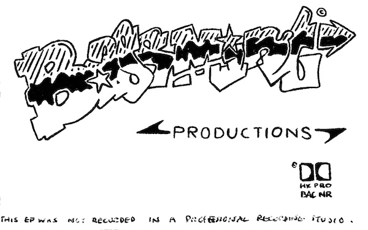

- A1. Bassmint Intro - M&M
- A2. Beats 1–5 - Instrumental
- A3. My Posse - M&M
- A4. Chaos Kid (Skit)
- A5. Symbolic Reflections - Chaos Kid
- A6. Beats 6–8 - Instrumental
- B1. Beats 9–14 - Instrumental
- B2. Smoke Crack On The Mic - M&M
- B3. Danny K (Skit)
- B4. Positive Identity - Chaos Kid
- B5. Fab Five Freddy (Skit)
- B6. Positive Identity #2 - Chaos Kid
- B7. Don’t Chew With Your Mouth Full - M&M